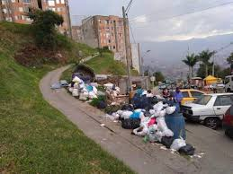

Las calles de Medellín están llenas de basuras y huecos y, contrario a lo que dice la Alcaldía, sí existe una explicación, unos culpables y soluciones a la vista. Un poco de historia. En su momento, el sindicato de trabajadores de Emvarias y varios concejales de la ciudad se opusieron al renting. Tenían razón. En caja habían más de 20.000 millones de pesos para comprar flota propia. Renting Colombia no es una empresa de transporte, pero sí de finanzas. Proyectó ingresos y no hizo mantenimiento adecuado de los camiones, tanto que el año pasado uno se quedó sin frenos, dejó un muerto y 26 heridos. Accidentes que se están volviendo recurrentes en Medellín. Hoy la ciudad no cuenta con flota propia, la mayoría son alquilados. Según denuncian, más del 50 % de las rutas para recolección de basuras está retrasada. Los camiones llegan cuatro o cinco horas después. Usuarios de redes sociales afirman que la recolección es más demorada.
El problema con la no recolección a tiempo, además, es la acumulación. Quien ve basura, arroja más, incluso escombros. La cultura Metro al revés. Ante la avalancha de quejas de los usuarios y de basuras en las calles, la Superservicios le pidió explicaciones a Emvarias y, según su respuesta, interpondrá sanciones. En noviembre del 2021, Emvarias prometió ingresar a la flota 60 nuevos camiones en menos de seis meses, según reportó EL COLOMBIANO entonces. Van diez meses y nada que llegan. Si seguimos como vamos, en diciembre el sistema colapsará. Renting Colombia no tendrá suficientes camiones ni nuevos ni viejos que ofrecerle a Emvarias. Ojalá ni se suspendan las rutas para la recolección de basuras de los ciudadanos de Medellín ni se incumpla con ellas. Sería muy grave. Una propuesta para que no digan que solo se crítica. Emvarias debe ser una empresa independiente de EPM. Hoy, al igual que en 2014, como lo afirmaba el entonces concejal Carlos Bayer, la empresa tiene los recursos para comprar flota propia. La Alcaldía de Medellín debe respetar la experticia de Emvarias y ofrecerles a sus trabajadores la garantía de estabilidad laboral. En este caso, como en el de los huecos —que tocaré en una próxima columna—, la alcaldía no ha movido un dedo para resolver el problema de fondo. Los camiones que anunció Quintero en Feria de Flores no son nuevos, era un faltante de flotas anteriores. Medellín merece una administración y una empresa serias para volver a ser una tacita de plata REPORTE UN ERRORAGREGAR INFORMACIÓN Porq
En Medellín se tienen identificados 2.200 puntos críticos donde se acopian basuras de forma desordenada y sin ningún tipo de control, según reveló Carlos Fernando Borja, gerente de Empresas Varias Emvarias. En entrevista con el programa Consejo de Redacción de Teleantioquia, Borja indicó que estos puntos se presentan en toda la ciudad y en ellos es reiterativo el comportamiento de ciudadanos irresponsables que, pese a las acciones desarrolladas por Emvarias para dejar limpios estos puntos, al poco tiempo vuelven y los dejan inundados de basura. “Por ejemplo, el pasado viernes hicimos una ‘operación naranja’ en la comuna 15 Guayabal. Allí recogimos de forma gratuita alrededor de 200 metros cúbicos de basura y de enseres. Pero al poco tiempo los mismos puntos intervenidos allí ya mostraban desechos y hasta escritorios tirados. Si la comunidad no ayuda, es muy difícil”, puntualizó Borja. El funcionario también señaló que parte de la situación de mal manejo de basuras que tiene la ciudad podría remontarse a problemas que vienen pasando desde administraciones pasadas. “En la alcaldía anterior, por algún motivo, cerraron los ‘puntos limpios’ que habían sido habilitados para recoger escombros. Estos puntos son de la Secretaría de Medio Ambiente. En pandemia no se notó tanto el cierre, pero en la pospandemia la gente salió a tirar escombros a la calle y ahí se notó la falta de los puntos”, indicó. De otro lado Borja también dijo que el Vaso Altair –en el que actualmente se deposita gran parte de la basura del departamento– tiene vida útil hasta septiembre de 2023. Aunque Borja señaló que ya se está buscando construir un nuevo vaso con el nombre de La Piñuela, la vida útil de este será de unos seis años nada más. Otro asunto tocado por el gerente es que parte de los problemas de basura en la ciudad se dan por algunos retrasos en las horas de recogida, producto del hecho de que los vehículos de Emvarias están trabajando a doble jornada en un esfuerzo por cumplir con frecuencias y horarios. Sobre este tema puntual, el gerente habló del estado de la flota vehicular de Emvarias la cual está compuesta por 125 vehículos de los que según dijo ya todos cumplieron su vida útil. Por ello informó que se adelanta una renovación vehicular de la que se espera lleguen en septiembre 70 nuevos automotores a gas y a diesel. Por último Borja indicó que actualmente con el Colegio Mayor se está realizando un estudio que busque determinar si es necesaria una renovación de las rutas de recogida así como el aumento de planta de colaboradores de Emvarias, que actualmente cuenta con 2.200. Aún así Borja indicó que para él es necesaria la creación de una inspección ambiental que ponga en cintura a los reincidentes que ensucian la ciudad
La expansión urbanística en Medellín y toda el área metropolitana ha generado, en las últimas décadas, una grave problemática ambiental debido a la inadecuada disposición de residuos. Gran parte de estos pueden ser incluidos nuevamente en procesos productivos, aportando significativamente a la economía circular de la ciudad. Algunas de las afectaciones generadas debido a una mala disposición son: Daños en la movilidad y separadores viales de la ciudad, por estar ubicado en sitios no autorizados y de alto flujo vehicular. Deterioro de las zonas verdes y de los cerros tutelares de la ciudad. Aumento de material particulado emitido por los puntos críticos y escombreras ilegales, disminuyendo la calidad de aire frente a las contingencias ambientales. Disminución de vida útil en los rellenos sanitarios por la inadecuada disposición. Deterioro del paisaje, el entorno y el espacio público por puntos críticos. Desde la Secretaría de Medio Ambiente ratificamos la importancia del buen manejo y recuperación de los residuos como un proceso fundamental para reducir el impacto de la actividad del hombre en el medio ambiente y fomentar así hábitos de consumo sostenible.
Comité encargado de identificar puntos críticos en la ciudad, con el objetivo de intervenirlos y transformarlos. Este comité es coordinado por la Secretaría de Medio Ambiente, quien se encarga de realizar el diagnóstico de cada intervención, para articular posteriormente las instituciones necesarias. Las entidades que participan de este comité son la Secretaría de Medio Ambiente, Secretaría de Infraestructura, Secretaría de Inclusión Social, Secretaría de Salud, Subsecretaría de Espacio Público, Emvarias, UNE, EPM, Policía Nacional, En dichas intervenciones se adelantan usualmente labores de mantenimiento y siembra de zonas verdes, lavado de zonas públicas, recolección de escombros y voluminosos (muebles, colchones, etc.), eliminación de publicidad de los postes de energía y pintura de muros. Adicional a estas acciones, se realizan sensibilizaciones con la comunidad en torno a buenas prácticas ambientales, a través de estrategias como talleres, capacitaciones, puerta a puerta y charlas. Las jornadas de aseo y ornato están orientadas a la sostenibilidad de la ciudad, por esto se adelantan en zona urbana de Medellín y en las cabeceras de los cinco corregimientos de la ciudad. En estas intervenciones se realiza la limpieza, restauración y embellecimiento de puntos críticos de residuos sólidos, utilizando estrategias como los convites comunitarios y articulaciones interinstitucionales. Simultáneamente, se llevan a cabo actividades sociales asociadas a la sensibilización en la adecuada gestión de los residuos sólidos como visitas puerta a puerta, actividades lúdico-pedagógicas en parques aledaños, sensibilizaciones grupales, entre otro